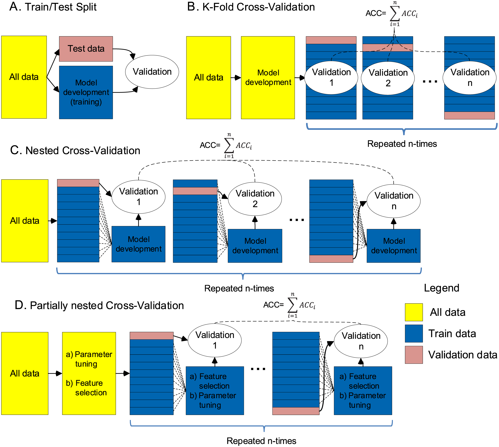

# Import data
df = pd.read_csv("./data/UV_pilot.csv")
# Split features and target
X = df.loc[:,"4000":"403"]
y = df.loc[:,"Exposed"]
# Split into train and test sets
X_train, X_test, y_train, y_test = train_test_split(X, y, shuffle=True, stratify=y, test_size=0.2)3 Machine learning pipelines
In this section, we are going to describe some of the pipelines that our group uses as a starting point in the analysis of infrared data. If you want to explore deeper about machine learning, models, optimization, etc, a really good source is the scikit-learn user guide
3.1 Basic exploratory machine learning analysis
This is a pipeline that can be used to compare different models and decide which one is the best for your case and further optimize it and test it on our test data set.
3.1.1 Explore different models
First, you need to import your data, separate features (absorbances) and the target variable, and split the data set into train and test set.
Important
Be sure you stratify your split by using the stratify parameter. This is to make sure the different classes of the target varibale are equality distribute in the split
You need to create a dictionary of the models you want to test. For this example, we are going to use 3 models: Logistic regression, Support Vector Machine, and Random Forest but you can add more models if needed.
It is good practice to use pipelines to avoid data leakage especially, if we are using preprocessing algorithms in our data. Usually, we apply standard scaling, so for this, we will build a pipeline that includes the preprocessing algorithm and the model. Click here if you want to learn more about pipelines and how to use them.
Then, we create a for loop which is going to iterate between each model, do a cross validation with our specified pipeline, append the results into a list and print a message with the accuracy and the standard deviation of each model.
We can examine our results more with a plot
From the plot, we can see that logistic regression has the highest accuracy. So, we choose it as our model to further optimize it.
3.1.2 Model optimization
Model optimization consist on finding the best combination of our model’s hyperparameter values that will give us the best accuracy. For this, we need to know which hyperparameters can be change, what values they accept and how the affect the model.
For logistic regression we can try different values of C, the type of solver it uses and the type of penalty. We create a dictionary with the hyperparameters and the different values we cant to try.
Sklearn in-built function GridsearchCV will go over each of the possible combinations between the different values of each hyperparameter and calculate the accuracy of each combination. Then, it will chose the model with the best accuracy and the parameters that uses.
Here, we can see that the best parameters with a cross-validation value of 0.91 are C=10, penalty=l1, solver=liblinear.You can select the best pipleine from the object using .best_estimator_ atrribute.
Important
Model optimization can be a extremely long process. Be mindful of the hyperparameters you want to test. This will require you to really study the model and make sense of the values you are going to use. Again, scikit-learn documentation is extremely helpful!
3.1.3 Test the final model
The final optimized model (or in this case pipeline) is tested on the unseen data you split at the beginning of the analysis. Fit the optimized model to your train data set and calculate the predicted values
Your final score, confusion matrix and auc-roc curve
3.1.4 How can we check what features are important?
This is a hot topic, at least for me. For various reasons: correlation of the features, the model that you use, misleading results, etc. A way of have the feeling about what the model is learning is to look at the coefficients. Some models will have feature importance as an attribute (random forests and XGboost) as well SVC with a non-linear kernel. Whatever you will use, this is how you access them.
For this example, I will use the dataset but only suing 14 wavenumbers from González Jiménez et al. (2019).
I have already selected an optimized pipeline.
You can access the attributes of each part of the pipeline using named_steps function.
The number of coefficients will be equal to the number of features. They will be ordered the same as you input as targets.
You can create a dataframe with the
Finally, you plot as a barplot. The values of the coefficients can be positive or negative. If they are positive they push the decisiion to the negative class.
And there you have it. If your model has a feature importance attribute, the same principle applies. There are other approaches such as permutation importance which can be used when you are using discrete numbers of features.
3.1.5 Permutation importance
Sklearn has a Permutation importance class that you can use. Basically, a baseline accuracy is calculated with an unseen test set. Then, a feature is selected and permutated, the new accuracy is calculate and the permutation importance is given by the diffferentece between the baseline and the permutated accuracy. You repeat the process n times and you can then check the values and see what feature caused the most decrease in accuracy.
You can plot the mean with the standard deviation pretty easily
Here, we can see how the absorbance at 1076 cm\(^{-1}\) caused a major decrease in accuracy compared to the rest of wavenumber values.
If we compared the two approaches:
Some wavenumbers matches, some other do not.
3.1.6 Permutation importance using RF
Let’s do the same process but with a RF model. After we created the pipeline and and test it on the test set. We got an accuracy of 0.9. We access the feature importance using the attribute feature_importances_
We can plot the values vs wavenumber values
The absorbance at 3856 cm\(^{-1}\) seem to be quite important for this model. If we compare to the permutation imporance we can see that they are quite similar.
You can also compare between using the train set or the test set for permutatioin importance:
Something to consider and I quote:
“Permutation importances can be computed either on the training set or on a held-out testing or validation set. Using a held-out set makes it possible to highlight which features contribute the most to the generalization power of the inspected model. Features that are important on the training set but not on the held-out set might cause the model to overfit.”
Warning
Features that are deemed of low importance for a bad model (low cross-validation score) could be very important for a good model. Therefore it is always important to evaluate the predictive power of a model using a held-out set (or better with cross-validation) prior to computing importances. Permutation importance does not reflect to the intrinsic predictive value of a feature by itself but how important this feature is for a particular model (sklearn documentation)
3.2 Nested Cross validation
Nested cross validation can be useful when you do not have a large sample size. Improper use of validation approaches can result in biases in our results. Nested CV and train/test split approaches produce robust and unbiased performance estimates regardless of sample size. Grafical examples of how different validations techniques are shown in Figure 3.1. Nested cross-validation has a inner and outer layer. The inner layer will be used to optimize the model and the outer layer will be used to test the optimized model. This process will be repeated n times. Bear in mind that this is a very time and source consuming approach. You can read more on which different approaches you can use to deal with small data sets [Vabalas et al. (2019)](Varma and Simon 2006). For this example we are going to use nested cross validation as shown in Figure 3.1. We take all the data, and we split it in n folds (outer layer), n-1 folds will be used for model development/optimization (inner layer) and the reminder fold will be used to validate the model. This process will be repeated for each fold in the outer layer. The final accuracy will be the mean of each outer layer.

Validation methods. A: Train/Test Split. B: K-Fold CV. C: Nested CV. D: Partially nested CV. ACC—overall accuracy of the model, ACCi.—accuracy in a single CV fold (Taken from (Vabalas et al. 2019))
As we assumed that we do not have enough samples in our data set, therefore, we do not need to split the data into train and test sets.
We set up the conditions of our nested cross validations. We add our model and any preprocessing, the number of splits for the inner and outer layer and our final pipline. This time, we are using KFold and 3 folds for both layers
Now, the for loop. First, we split the data using the outer split,with for train_ix, test_ix in cv_outer.split(X):. We run GridSearchCV using the train test with the inner layer cross validation (specified in the parameter cv of GridSearchCV). The best modelis then tested on the test set of the outer layer.
To report the result you can use AUC-ROC with confidence intervals or a confusion matrix with the mean of the accuracies of each of the results from the outer layer. Let’s plot the confusion matrix
To plot the AUC-ROC with confidence intervals is a little bit tricky using nested cross validation. We need to create lists where we store the best estimator and the X_train, and y_train sets of each outer layer. Then we run a for loop where we going to plot the roc curve for each X_train, y_test and best model using RocCurveDisplay.from_estimator function.
We can see three curves that correspond to each outer layer and we can see the values of AUC for each one in the plot legend. Now we need to calculate the mean of the curves plot it over the current plot
Finally, we plot the standard deviation and get rid of the legend
3.3 Nested cross validation plus validation on unseen data
This is a variation of the nested cross validation (develop by our colleagues from IHI). The addition is that you will test the final model in unseen data. So, you can report both, your results of the nested cross-validation as well as the accuracy on the unseen data.
Here we are going to use:
Using numpy arrays instead of dataframes
Split the data into train and test as a whole
Saving a lot of data from the cross validation to further explore the results.
Export and save the model (to avoid training every time we run the notebook)
Setting up the general aesthetics of the plots at the beginning of the script
For easiness, we have contain the whole code into a function, to avoid mistakes when copy and paste from different notebooks
3.3.1 Set plot aesthetics
Setting up the general aesthetics of the plot. When using seaborn packgaes, you can set the syle, context fonts, of all the plots from the beginning
sns.set(
context = "paper",
style = "white",
palette = "deep",
font_scale = 2.0,
color_codes = True,
rc = ({"font.family": "Dejavu Sans"})
)3.3.2 Defining the fuctions
We defined two functions: ml_loop and confusion_matrix_mau.
The only new package here is joblib to save our trained model. The principle is the same as nested cross validation.
3.3.3 Split the data
We load our data and split into train and test set. We also stratify the split using the “Exposed” variable and then separate our features and target from each of the splits
X_train = np.asarray(train_set.iloc[:,5:-1]) # feature matrix
y_train_exposure = np.asarray(train_set['Exposed'])
X_test = np.asarray(test_set.iloc[:,5:-1])
y_test_exposure = np.asarray(test_set['Exposed'])Why are we using numpy arrays instead of dataframes? Numpy arrays provide a consistent and standardized data format that scikit-learn classifiers can easily handle. This allows for integration with other scikit-learn functionalities, such as preprocessing, cross-validation, and model evaluation
Tip
Sklearn classifiers can easyly handle numpy arrays
3.3.4 Setting the parameters of nested cross validation
Here, we defined the number of folds (inner layer) and the number of rounds (outer layer). Note that we are using a random number generator as random_seed. This number will change each round and will give use a different split in the outer layer
# Set validation procedure
num_folds = 5 # split training set into 5 parts for validation
num_rounds = 2 # increase this to 5 or 10 once code is bug-free
seed = 42 # pick any integer. This ensures reproducibility of the tests
random_seed = np.random.randint(0, 81478)
scoring = 'accuracy' # score model accuracy
# cross validation strategy
kf = KFold(
n_splits = num_folds,
shuffle = True,
random_state = random_seed
)3.3.5 Setting the parameters of nested cross validation
The hyperparameters for support vector machine that we are going to test are C, kernel and gamma.
random_grid = {'C': [10, 1.0, 0.1, 0.01], 'kernel': ["linear", 'rbf', 'poly'], 'gamma': [0.1, 1, 10]}
species_model = SVC()3.3.6 Run the loop
We run the loop. The function needs X and y train, the split type, number of rounds and folds, hyperparameters, the score and the model
You can see how each round will contain 5 best models.
We plot a confusion matrix which is the sum of all the confusion matrices from each round.
We load our trained model, test it in the unseen data and plot the confusion matrix
loaded_model_exposure = joblib.load('./results/models/trained_model_mau_mau.sav')Since we save a lot of data from the loop, for example accuracy of each inner layer. We can plot an histogram to check how stable was the accuracy across layers.